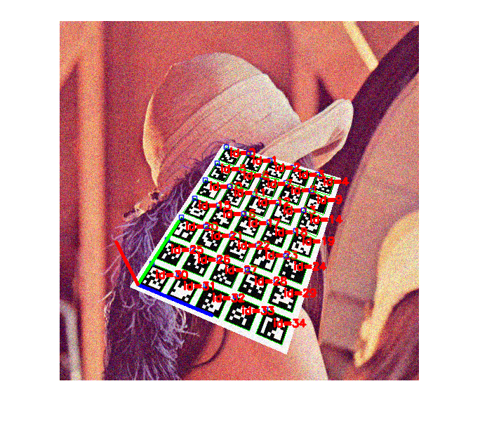

Detection of ArUco Boards Demo
Detection and pose estimation using a Board of markers (an ArUco Planar Grid board).
Sources:
Contents
Parameters
% options vidFile = ''; % Use video file instead of camera as input markersX = 5; % Number of markers in X direction markersY = 7; % Number of markers in Y direction markerLength = 60; % Marker side length (in pixels) markerSeparation = 15; % Separation between two consecutive markers in the grid (in pixels) dictionaryId = '6x6_250'; % Dictionary id showRejected = false; % Show rejected candidates too refindStrategy = true; % Apply refined strategy estimatePose = true; % Wheather to estimate pose or not if estimatePose % calibrated camera parameters load camera_parameters.mat -mat camMatrix distCoeffs %camMatrix = eye(3); %distCoeffs = zeros(1,5); else camMatrix = []; distCoeffs = []; end % marker detector parameters detectorParams = struct(); if false %detectorParams.nMarkers = 1024; detectorParams.adaptiveThreshWinSizeMin = 3; detectorParams.adaptiveThreshWinSizeMax = 23; detectorParams.adaptiveThreshWinSizeStep = 10; detectorParams.adaptiveThreshConstant = 7; detectorParams.minMarkerPerimeterRate = 0.03; detectorParams.maxMarkerPerimeterRate = 4.0; detectorParams.polygonalApproxAccuracyRate = 0.05; detectorParams.minCornerDistanceRate = 0.05; detectorParams.minDistanceToBorder = 3; detectorParams.minMarkerDistanceRate = 0.05; detectorParams.cornerRefinementMethod = 'None'; detectorParams.cornerRefinementWinSize = 5; detectorParams.cornerRefinementMaxIterations = 30; detectorParams.cornerRefinementMinAccuracy = 0.1; detectorParams.markerBorderBits = 1; detectorParams.perspectiveRemovePixelPerCell = 8; detectorParams.perspectiveRemoveIgnoredMarginPerCell = 0.13; detectorParams.maxErroneousBitsInBorderRate = 0.04; detectorParams.minOtsuStdDev = 5.0; detectorParams.errorCorrectionRate = 0.6; end detectorParams.cornerRefinementMethod = 'Subpix'; % do corner refinement in markers % create board dictionary = {'Predefined', dictionaryId}; board = {'GridBoard', ... markersX, markersY, markerLength, markerSeparation, dictionary}; axisLength = 0.5 * (min(markersX, markersY) * ... (markerLength + markerSeparation) + markerSeparation);
Input source
if ~isempty(vidFile) && exist(vidFile, 'file') == 2 vid = cv.VideoCapture(vidFile); waitTime = 1; % 1 sec else vid = createVideoCapture([], 'aruco'); waitTime = 0.01; % 10 msec end if ~vid.isOpened(), error('failed to initialize VideoCapture'); end
Main loop
totalTime = 0; totalIterations = 0; hImg = []; while true % grab frame img = vid.read(); if isempty(img), break; end tId = tic(); % detect markers [corners, ids, rejected] = cv.detectMarkers(img, dictionary, ... 'DetectorParameters',detectorParams); % refined strategy to detect more markers if refindStrategy [corners, ids, rejected] = cv.refineDetectedMarkers(img, board, ... corners, ids, rejected, ... 'CameraMatrix',camMatrix, 'DistCoeffs',distCoeffs); end % estimate board pose markersOfBoardDetected = 0; if estimatePose && ~isempty(ids) [rvec, tvec, markersOfBoardDetected] = ... cv.estimatePoseBoard(corners, ids, board, camMatrix, distCoeffs); end % tic/toc currentTime = toc(tId); totalTime = totalTime + currentTime; totalIterations = totalIterations + 1; if mod(totalIterations, 30) == 0 fprintf('Detection time = %f ms (Mean = %f ms)\n', ... 1000*currentTime, 1000*totalTime/totalIterations); end % draw results if ~isempty(ids) img = cv.drawDetectedMarkers(img, corners, 'IDs',ids); end if showRejected && ~isempty(rejected) img = cv.drawDetectedMarkers(img, rejected, 'BorderColor',[255 0 100]); end if estimatePose && markersOfBoardDetected > 0 img = cv.drawAxis(img, camMatrix, distCoeffs, rvec, tvec, axisLength); end if isempty(hImg) hImg = imshow(img); elseif ishghandle(hImg) set(hImg, 'CData',img); else break; end drawnow; pause(waitTime); end vid.release();
Detection time = 93.482247 ms (Mean = 91.843650 ms) Detection time = 90.427224 ms (Mean = 91.272188 ms)